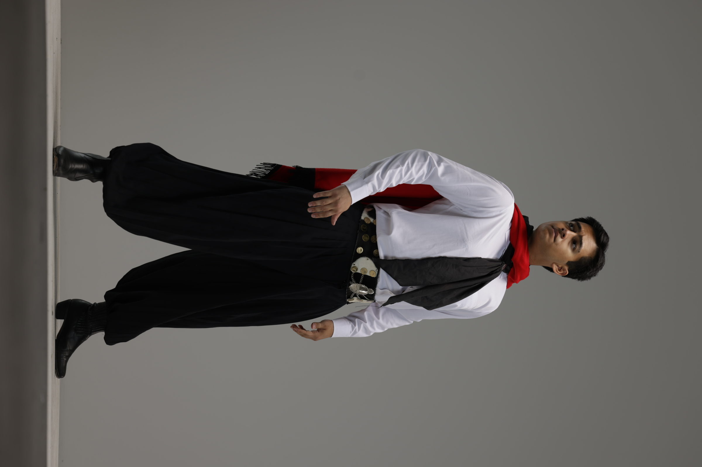

Benjamin Lopez

I was born in Orlando, Florida but at a young age my family moved here to Utah. I began dancing in a program at the conference center called Luz de las Naciones and I fell in love with folklorico after that. I've danced in several different groups and have learned styles from Mexico, Argentina, Peru, and many more. I have Venezuelan and Ecuadorian heritage and am excited to announce that we will soon be learning a few Venezuelan dances! I'm grateful for the opportunity I have to share our rich cultures and the beautiful messages their history brings.
Check out our repertoire for the coming years!Resume
- Education
- Major: Pre-Business(Information Systems)
- Minor: Cultural Dance
- Utah Jazz Scholarship Recipient
- BYU Living Legends - Summer 2022 Mexico/Summer 2023 New Zealand/Tahiti Tours
- Experience
- Accounts Payable/Receivables Intern at Ken Garff Corporate: May 2022-Aug 2022
- Warehouse Associate at Propeller Inc.: Aug 2018-Jan 2022
- Expeditor/Busser at Brick Oven: Jan 2018-Aug 2018
- Skills and Interests
- Proficient in Tableau, VBA, Excel and Python
- Experience with SQL, HTML/CSS, and Excel Statistics including but not limited to Solver
- Native Spanish Speaker
- Forklift Certified
- Latin Folkloric Dancer